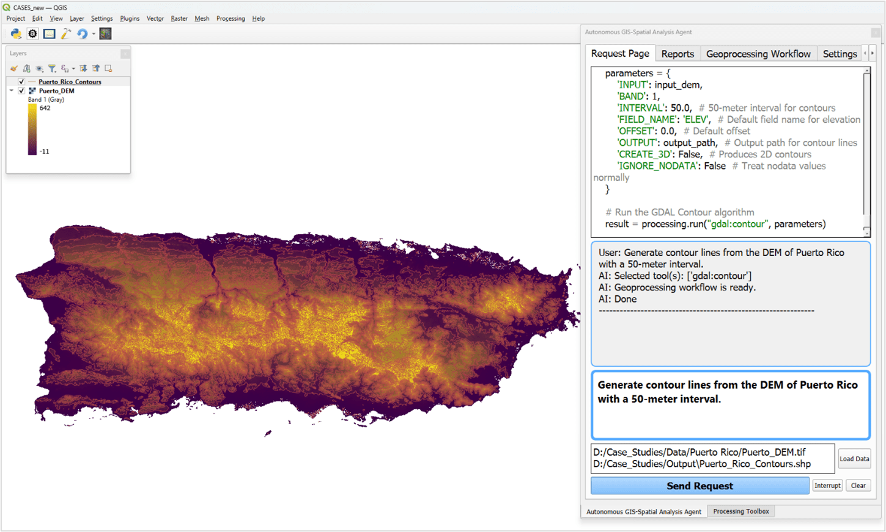
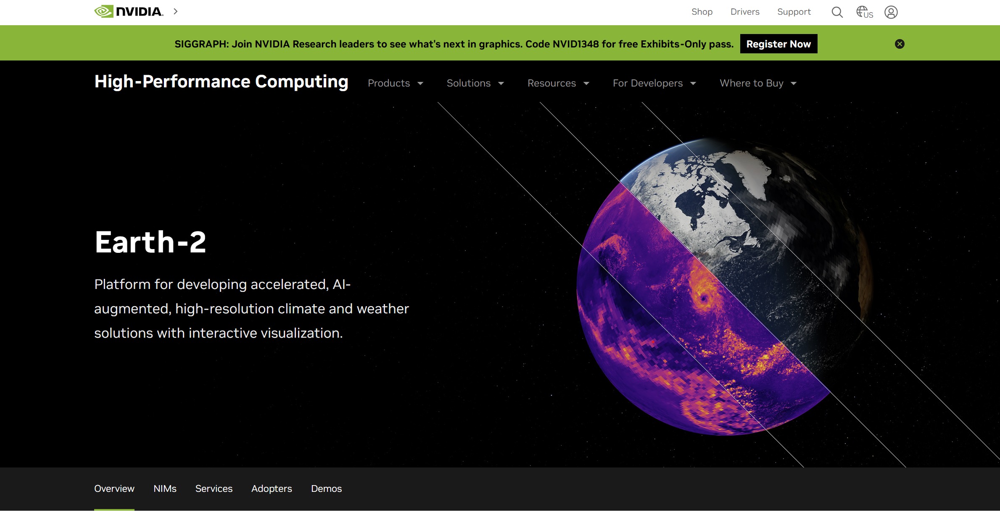
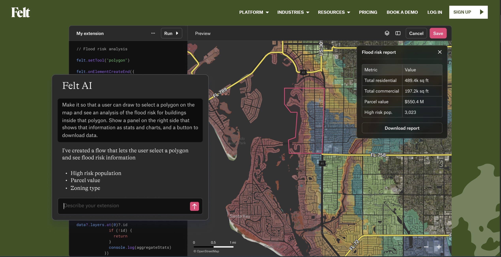

Existing Projects

1. GIS Copilot
LLM directly into QGIS
Natural-language to GIS operations: Users can ask questions like “create 500-m buffers around subway stations and intersect with zoning areas” and Copilot builds and runs the corresponding geoprocessing steps.
valuated on 100+ spatial tasks: handles basic (single-tool), intermediate (guided multi-step), and some advanced tasks. Performs well for simpler workflows; advanced autonomy still evolving.
Integrated plugin: Built as a QGIS plugin, it supports both vector and raster analysis and links with external libraries like GeoPandas and Seaborn for extended analytics.
LLM directly into QGIS
Natural-language to GIS operations: Users can ask questions like “create 500-m buffers around subway stations and intersect with zoning areas” and Copilot builds and runs the corresponding geoprocessing steps.
valuated on 100+ spatial tasks: handles basic (single-tool), intermediate (guided multi-step), and some advanced tasks. Performs well for simpler workflows; advanced autonomy still evolving.
Integrated plugin: Built as a QGIS plugin, it supports both vector and raster analysis and links with external libraries like GeoPandas and Seaborn for extended analytics.

2. Nvidia Earth-2
Planet-scale Earth digital twin platform
CorrDiff: A diffusion-based generative AI model that downscales traditional forecasts—from coarse (~25 km) to fine (~2 km) resolution—providing localized weather predictions such as wind, precipitation, and temperature.
cBottle ("Climate in a Bottle"): A generative foundation model capable of simulating climate conditions at ~5 km resolution, compressing vast volumes of climate data for efficient storage and inference.
Earth2Studio & PhysicsNeMo: GPU-accelerated frameworks and inference microservices built for model training, simulation, and custom deployment via the Earth-2 stack.
Omniverse Blueprint for Earth-2 Weather Analytics: An open reference architecture with modules like Earth-2 Command Center, Data Federation Mesh, and weather model microservices, enabling interactive visualization pipelines and scalable simulation environments.
Planet-scale Earth digital twin platform
CorrDiff: A diffusion-based generative AI model that downscales traditional forecasts—from coarse (~25 km) to fine (~2 km) resolution—providing localized weather predictions such as wind, precipitation, and temperature.
cBottle ("Climate in a Bottle"): A generative foundation model capable of simulating climate conditions at ~5 km resolution, compressing vast volumes of climate data for efficient storage and inference.
Earth2Studio & PhysicsNeMo: GPU-accelerated frameworks and inference microservices built for model training, simulation, and custom deployment via the Earth-2 stack.
Omniverse Blueprint for Earth-2 Weather Analytics: An open reference architecture with modules like Earth-2 Command Center, Data Federation Mesh, and weather model microservices, enabling interactive visualization pipelines and scalable simulation environments.

3. Felt AI
Cloud-native GIS platform designed to empower users to build maps, and spatial apps
Automated Spatial UI Generation: Felt creates polished, responsive interfaces—buttons, popups, workflows—based on prompts. No frontend coding needed. It takes care of styling, data layering, legend generation, and interaction logic—all inline with your map view.
Data Integration & Scaling: Seamless connection to cloud sources: Postgres, Snowflake, BigQuery, Databricks, ESRI, WFS/STAC, and more. Felt also supports drag-and-drop upload of almost any spatial file type—automatically geocoding or parsing geometry without manual wrangling.
Dashboard & App Builder: Within the same platform you can create dashboards, charts, histograms, and interactive apps, tied to real-time spatial data updates—no separate infrastructure required.
Cloud-native GIS platform designed to empower users to build maps, and spatial apps
Automated Spatial UI Generation: Felt creates polished, responsive interfaces—buttons, popups, workflows—based on prompts. No frontend coding needed. It takes care of styling, data layering, legend generation, and interaction logic—all inline with your map view.
Data Integration & Scaling: Seamless connection to cloud sources: Postgres, Snowflake, BigQuery, Databricks, ESRI, WFS/STAC, and more. Felt also supports drag-and-drop upload of almost any spatial file type—automatically geocoding or parsing geometry without manual wrangling.
Dashboard & App Builder: Within the same platform you can create dashboards, charts, histograms, and interactive apps, tied to real-time spatial data updates—no separate infrastructure required.